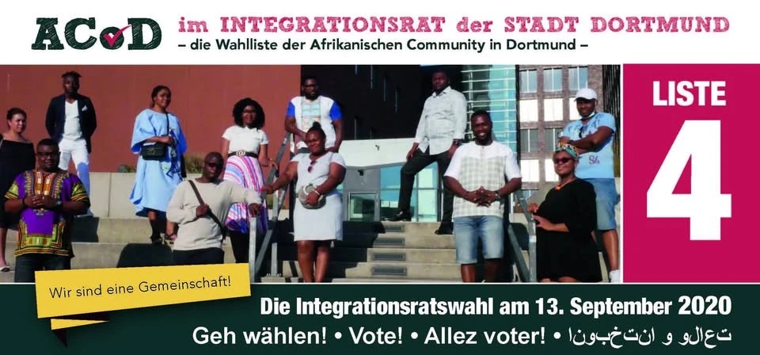

Politische Teilhabe
ACoD im Integrationsrat der Stadt Dortmund
Die Wahlliste der Afrikanischen Community in Dortmund: Wir sind eine Gemeinschaft!

Was ist der Integrationsrat?
Der Integrationsrat vertritt die Interessen der Dortmunderinnen und Dortmunder mit Einwanderungsgeschichte gegenüber Rat und Verwaltung der Stadt. Er wird alle fünf Jahre zusammen mit der Kommunalwahl gewählt und kann sich mit allen Angelegenheiten der Stadt befassen.
Wählen dürfen unter anderem Menschen ohne deutsche Staatsangehörigkeit, Eingebürgerte und Menschen, die die deutsche Staatsangehörigkeit durch Geburt als Kind ausländischer Eltern erworben haben.
Wofür wir uns einsetzen
- Mehr Beratung in afrikanischen Sprachen, Englisch und Französisch bei Ämtern
- Faire Chancen in Schule, Ausbildung und auf dem Arbeitsmarkt
- Anerkennung ausländischer Abschlüsse beschleunigen
- Klare Haltung gegen Rassismus und Diskriminierung
- Räume und Förderung für Vereine der afrikanischen Community
Ihre Anliegen gehören in den Integrationsrat
Was muss sich in Dortmund ändern? Schreiben Sie uns, wir tragen es weiter.